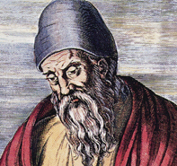

Famous Mathematicians

Charles Babbage
Charles Babbage ( 26 December 1791 – 18 October 1871)
was an English polymath. A mathematician, philosopher, inventor and
mechanical engineer, Babbage originated the concept of a digital programmable
computer.
Considered by some to be a "father of the computer", Babbage is
credited with inventing the first mechanical computer that eventually led to more
complex electronic designs, though all the essential ideas of modern computers
are to be found in Babbage's analytical engine.
His varied work in other
fields has led him to be described as "pre-eminent" among the many polymaths
of his century.
Parts of Babbage's incomplete mechanisms are on display in the Science
Museum in London. In 1991, a functioning difference engine was constructed
from Babbage's original plans. Built to tolerances achievable in the 19th century,
the success of the finished engine indicated that Babbage's machine would have
worked.
[Wikipedia]

Euclid
Euclid ( fl. 300 BC), sometimes called Euclid of Alexandria[1]
to distinguish him from Euclid of Megara, was a Greek mathematician, often
referred to as the "founder of geometry" or the "father of geometry". He was
active in Alexandria during the reign of Ptolemy I (323–283 BC). His Elements
is one of the most influential works in the history of mathematics, serving as the
main textbook for teaching mathematics (especially geometry) from the time of
its publication until the late 19th or early 20th century. In the Elements,
Euclid deduced the theorems of what is now called Euclidean geometry from a
small set of axioms. Euclid also wrote works on perspective, conic sections,
spherical geometry, number theory, and mathematical rigour.
Although many of the results in Elements originated with earlier
mathematicians, one of Euclid's accomplishments was to present them in a
single, logically coherent framework, making it easy to use and easy to
reference, including a system of rigorous mathematical proofs that remains the
basis of mathematics 23 centuries later.
[Wikipedia]